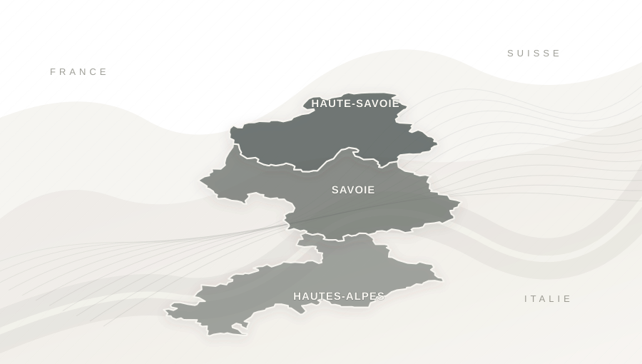

Le haut niveau.
Pour votre ski.
Une école imaginée par d’anciens sportifs de haut niveau. Leur expérience de la précision, du terrain et de la progression, mise au service de votre plaisir de skier.
dans le parcours fondateur
dans le parcours fondateur
avec une pédagogie humaine
Le ski, à votre façon.
Précision technique, découvertes, moments partagés : quatre manières de vivre une journée privée, toujours construite autour de vous.


Une vie à affiner
le geste. Une envie
de le partager.
L'excellence sportive n'est pas un niveau que nous exigeons de nos clients. C'est une expérience que nous mettons à leur disposition.
Un regard entraîné
Observer le terrain, comprendre un mouvement et identifier ce qui fait progresser.
Une pédagogie personnelle
Transformer des années de pratique en conseils accessibles, quel que soit votre niveau.
L'exigence du détail
Préparation, attention et sens du service, du premier échange au dernier virage.
L’excellence du geste.
Le plaisir de transmettre.
Une expérience précise sans être intimidante. Nous adaptons notre regard, notre pédagogie et le terrain à ce que vous souhaitez vivre.
Parler de votre journée- 01
Vous écouter
Comprendre votre niveau, vos envies et votre groupe.
- 02
Préparer ensemble
Choisir le bon accompagnement et le terrain adapté, sous réserve des disponibilités.
- 03
Skier avec précision
Des conseils clairs, des sensations nouvelles et un rythme qui vous ressemble.
Les Alpes.
Votre terrain de jeu.
De la Haute-Savoie aux Hautes-Alpes, en passant par la Savoie. Nous préparons votre journée autour de la station, du niveau et de votre projet.

Le haut niveau
mérite une suite.
Quinze années de compétition, sept années à enseigner à l’ESF. De ce parcours est née une conviction : l'expérience sportive prend tout son sens lorsqu'elle se transmet.
Ski Society se construit autour d'anciens sportifs de haut niveau, avec l'ambition de réunir excellence technique, transmission et attention au client.
L'histoire de Ski Society Le collectif est en cours de constitution. Les profils et qualifications des futurs partenaires seront vérifiés avant toute prestation.
La confiance se construit sur les pistes.
Le parcours du fondateur s'appuie sur des années d'enseignement et des avis antérieurs à la création de Ski Society.
Avant de prendre
les pistes.
Les réponses essentielles avant de préparer votre expérience.
Le ski privé s'adresse-t-il à tous les niveaux ?
Oui. Débutant, intermédiaire ou confirmé : c'est à nous d'adapter l'encadrement et les exercices à votre niveau.
Dois-je avoir choisi une station ?
Non. Nous pouvons en discuter selon votre projet, votre groupe, les conditions et les possibilités d'encadrement.
Qui sont les moniteurs de Ski Society ?
Le collectif est en cours de constitution. L'objectif est de rassembler d'anciens sportifs de haut niveau disposant des qualifications et assurances nécessaires à l'enseignement.
Comment préparer une journée ?
Un premier échange suffit. Nous discutons de vos attentes, puis des disponibilités et des conditions avant toute confirmation.
Votre prochaine journée
commence ici.
Quelques mots sur votre niveau, votre station ou vos envies. Nous échangeons directement pour imaginer la suite.
Échanger sur WhatsAppPremier échange sans engagement. Aucune réservation n'est confirmée en ligne.